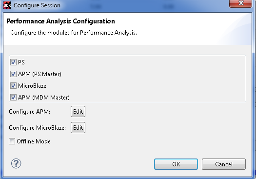
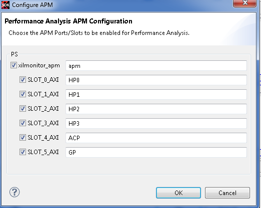
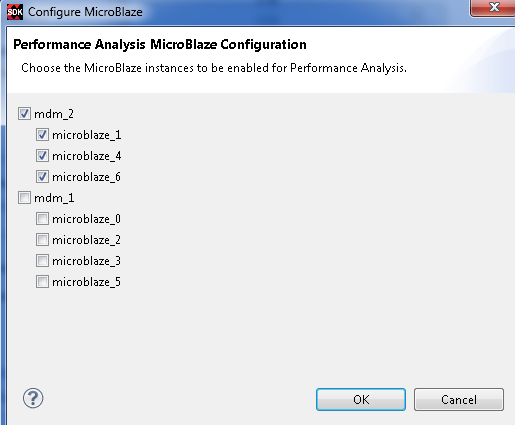

User can configure a session by choosing the list of modules for which the data has to be collected. Each of the modules will be enabled based on the design information.

If user wishes to configure the modules prior to starting performance analysis he could use the Configure Performance Analysis option on the hardware Project.
You can choose which APM slots to be monitored by selecting the Configure APM option on the Configure Session dialog box.

You can choose the MicroBlaze instances for performance analysis use the option Configure MicroBlaze in the Configure Session dialog box. By default, only instances from the first MDM module will be selected.

Viewing the live performance analysis is supported only for duration of 10 mins and stops automatically after the elapsed time. When Offline Mode is selected the performance analysis runs forever until user manually stops from the view.